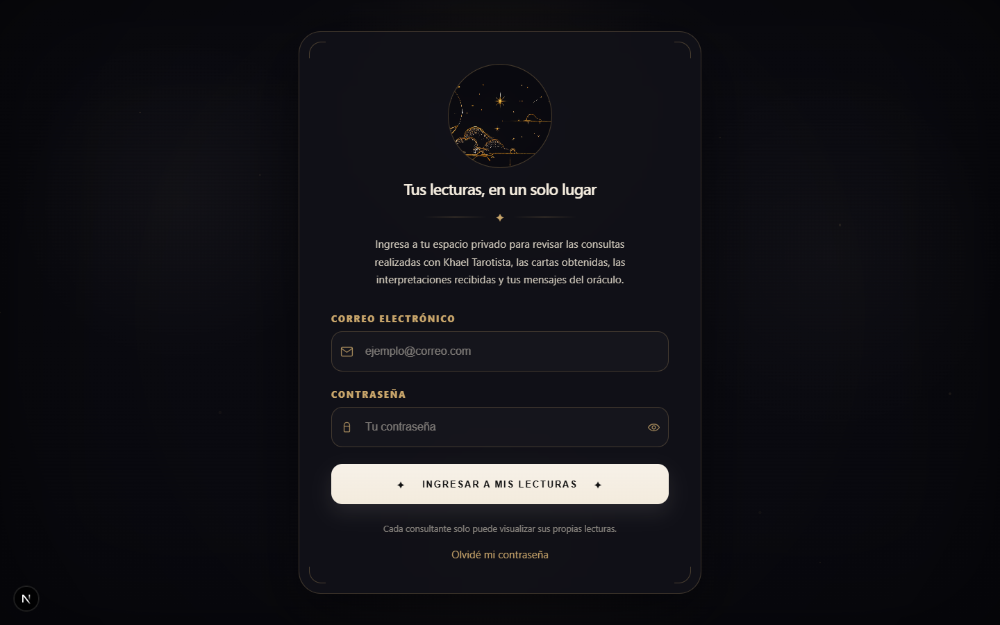
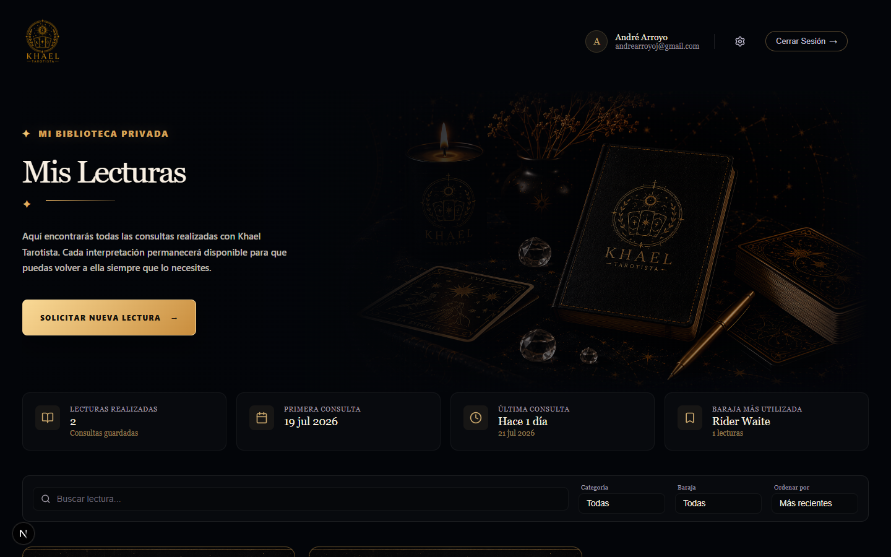
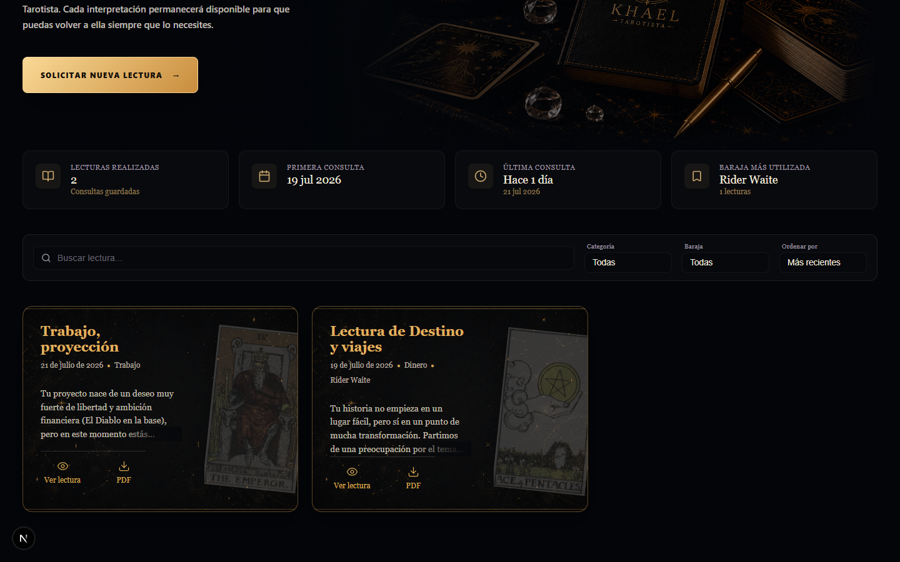
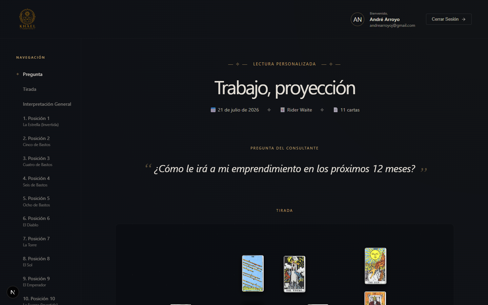
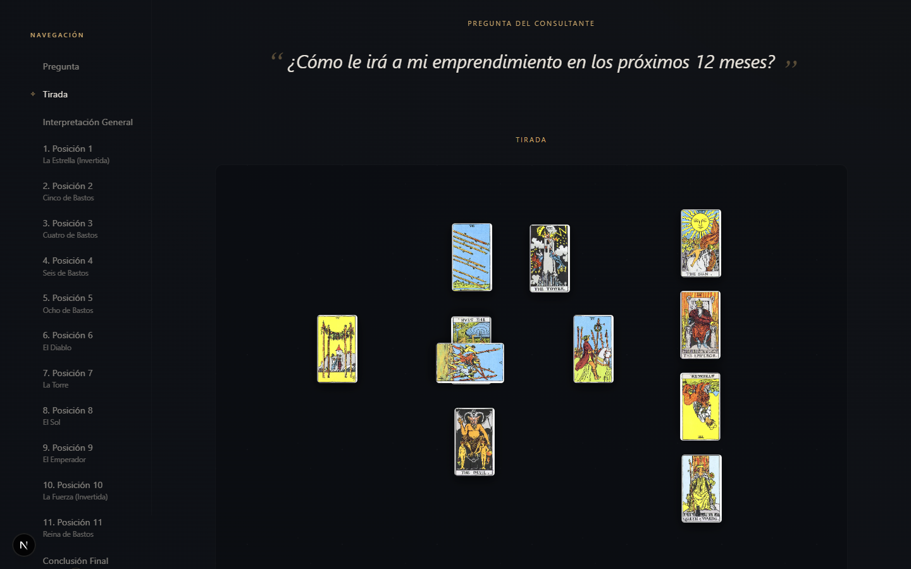
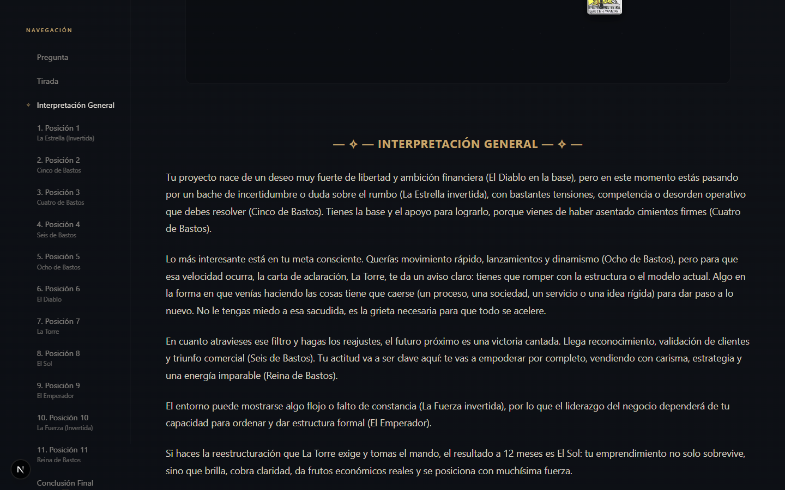

Guía paso a paso para acceder a tu biblioteca privada de lecturas de tarot. Aquí encontrarás cómo iniciar sesión, explorar tus consultas, revisar las interpretaciones y descargar tus lecturas en PDF.
Este manual te guiará a través de cada sección del apartado Mis Lecturas, tu espacio privado donde se guardan todas las consultas realizadas con Khael Tarotista.
Para acceder a Mis Lecturas necesitas las credenciales (correo y contraseña) que te fueron proporcionadas por Khael Tarotista al momento de tu consulta. Si no las recuerdas, puedes usar la opción "Olvidé mi contraseña" en la pantalla de inicio de sesión.
Tu espacio privado de consultas de tarot
Mis Lecturas es tu biblioteca personal dentro de la plataforma de Khael Tarotista. Cada vez que realizas una consulta, la lectura completa queda registrada y disponible en este espacio para que puedas revisarla cuando lo desees.
Desde aquí puedes:
Accede a todas las lecturas que has realizado, organizadas por fecha.
Observa la disposición exacta de las cartas tal como fueron colocadas.
Revisa la interpretación detallada de cada posición y la conclusión general.
Descarga cualquier lectura como un documento PDF profesional.
Cada consultante solo puede ver sus propias lecturas. Nadie más tiene acceso a tu información personal ni a tus consultas. Tu espacio es completamente privado.
Cómo ingresar a tu espacio privado
Para acceder a Mis Lecturas, sigue estos pasos:
Ingresa codexkhael.com/mis-lecturas en tu navegador (Chrome, Safari, Firefox). Serás redirigido a la pantalla de inicio de sesión.
Escribe el correo que utilizaste al momento de tu consulta con Khael Tarotista.
Escribe la contraseña que te fue proporcionada. Si es tu primera vez, se te pedirá cambiarla.
Haz clic en el botón dorado para acceder a tu biblioteca privada.

El panel principal de Mis Lecturas
Una vez que inicies sesión, serás recibido por tu Biblioteca Privada. Este es tu panel principal.

En la parte superior derecha verás tu nombre y correo electrónico, junto con opciones para cambiar tu contraseña (⚙️) o cerrar sesión.
Debajo del banner verás cuatro tarjetas con información resumida: Lecturas realizadas, Primera consulta, Última consulta y Baraja más utilizada.
El botón dorado "Solicitar Nueva Lectura" te conecta directamente con Khael Tarotista a través de WhatsApp para agendar una nueva consulta.
Más abajo encontrarás herramientas para organizar y encontrar tus lecturas:
Escribe cualquier palabra clave (título, pregunta, tema) para encontrar rápidamente una lectura específica.
Filtra tus lecturas por tema: Amor, Trabajo, Dinero, etc.
Si has tenido consultas con diferentes barajas, puedes filtrar por la baraja utilizada.
Ordena tus lecturas de más recientes a más antiguas o viceversa.
Tus consultas organizadas como tarjetas
Cada lectura aparece como una tarjeta con un resumen, la imagen de la primera carta y la información clave de la consulta.

En la parte inferior de cada tarjeta encontrarás dos botones:
👁️ Ver lectura — Abre la lectura completa con todos los detalles, cartas e interpretaciones.
📥 PDF — Descarga la lectura como un documento PDF profesional que puedes guardar o imprimir.
KHAEL TAROTISTA 7Explora cada aspecto de tu consulta personalizada
Al hacer clic en "Ver lectura", accederás a la vista completa de tu consulta.

En el lado izquierdo encontrarás un índice que te permite saltar a cualquier sección: Pregunta, Tirada, Interpretación, cada Posición y la Conclusión Final.
Muestra el título, la fecha, la baraja utilizada y el número total de cartas.
La pregunta que formulaste aparece destacada entre comillas.
Visualiza la disposición exacta de las cartas
La sección "Tirada" muestra la disposición visual de todas las cartas tal como fueron colocadas durante tu consulta, incluyendo rotaciones e inversiones.

Si una carta aparece girada, significa que fue leída en posición invertida. Esto modifica su interpretación y queda preservado fielmente en este registro.
La sabiduría detrás de cada carta
Debajo de la tirada encontrarás la Interpretación General, seguida del detalle de cada posición.

La carta del tarot con su orientación (derecha o invertida).
Qué aspecto representa (ej: "Obstáculo", "Futuro Cercano", "Consejo").
Análisis de lo que significa esa carta en esa posición, aplicado a tu pregunta.
Guarda tus lecturas para siempre
Puedes descargar cualquier lectura como un documento PDF profesional de dos maneras:
Cada tarjeta de lectura tiene un botón 📥 PDF en la parte inferior. Al hacer clic, se abrirá una nueva pestaña con tu lectura en PDF lista para descargar.
Dentro de la vista detallada, encontrarás un botón "Descargar PDF" en la parte inferior de la página.
El documento incluye: portada personalizada, la disposición visual de las cartas, la interpretación general, el detalle de cada posición con su carta y la conclusión final. Es un registro completo de tu consulta.
Mantén tu cuenta segura
Si deseas cambiar tu contraseña, sigue estos pasos:
Lo encontrarás en la esquina superior derecha del panel principal, junto a tu nombre.
Ingresa tu contraseña actual, luego escribe tu nueva contraseña y confírmala.
Presiona el botón para confirmar. Tu nueva contraseña quedará activa inmediatamente.
En la pantalla de inicio de sesión encontrarás el enlace "Olvidé mi contraseña". Haz clic e ingresa tu correo electrónico. Recibirás un enlace para restablecerla. Si no recibes el correo, revisa tu carpeta de spam o contacta directamente a Khael Tarotista.
Sí. Mis Lecturas funciona en cualquier dispositivo: computadora, tablet o celular. Solo necesitas un navegador web y conexión a internet.
Tus lecturas permanecen disponibles indefinidamente. Puedes volver a consultarlas en cualquier momento. Te recomendamos descargar los PDFs para tener una copia personal.
No. Tu espacio es completamente privado. Cada consultante accede únicamente a sus propias lecturas.
Si no recuerdas tu correo, contacta a Khael por WhatsApp. Si recuerdas tu correo pero no tu contraseña, usa "Olvidé mi contraseña" en la pantalla de inicio de sesión.
Sí. El botón "Solicitar Nueva Lectura" te conecta directamente con Khael Tarotista a través de WhatsApp.
Intenta usar otro navegador (Chrome es el recomendado). También puedes hacer clic derecho y seleccionar "Guardar enlace como...".
Si tienes cualquier duda o problema técnico, contacta a Khael Tarotista:
Tu lectura es un reflejo de tu momento presente y una guía para tus próximos pasos. Vuelve a consultarla cada vez que lo necesites.